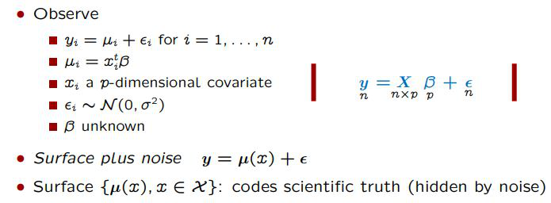
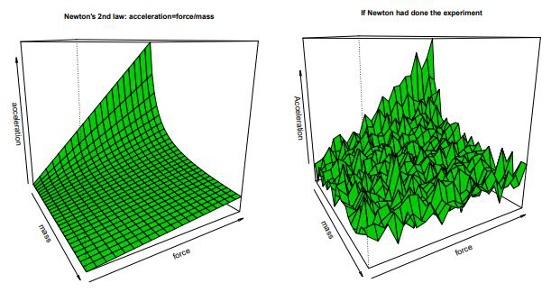
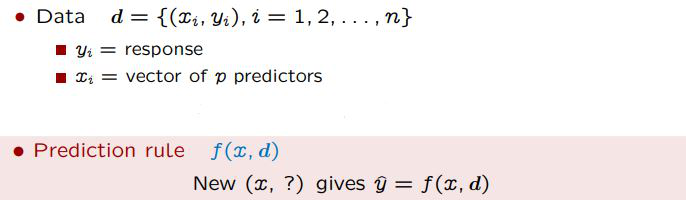
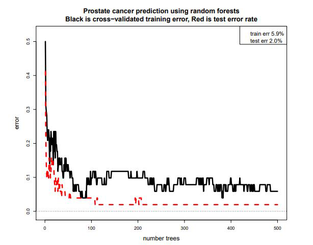
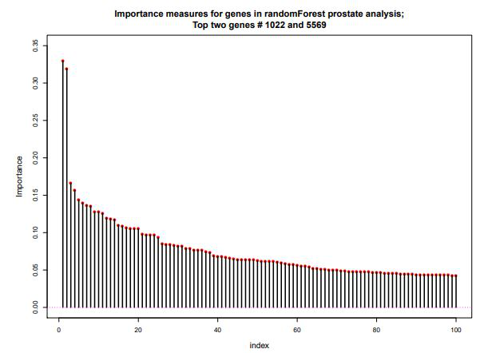
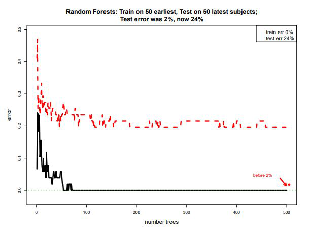

New Era of Statistics
Pure-prediction algorithms and how they interact with and relate to classical statistics.
Before progressing any further, please do NOT mistake the contents of the work summarized below as my work. They are from Professor Bradley Efron from Stanford University, whom I look up to immensely and whose acheivements I can only dare to follow one day. These are just extended notes from his lecture: Prediction, Estimation, and Attribution, mainly for my benefit to reference later and edited for the benefit of others.
Today we discuss the new era of pure-prediction algorithms, the differences that these algorithms have from more classical statistical approach, and how the landscape is changing to possibly accomodate for them. Below are a short list of different algorithms that each serve a differnt purpose.
- Prediction: Random Forests. Boosting, Support Vector Machines, Neural Nets, Deep Learning
- Estimation: Odinary Least Squares (OLS), Logistic Regression, Generalized Linear Model: Maximum Likelihood Estimation
- Attribution (Significance): ANOVA, Lasso, Neyman-Pearson
Perhaps if you are familiar with buzzwords from the data science world, you know some (or all) of the algorithms listed under the "Prediction" catagory. These have gotten amazing public attention, and while still stemming from traditional regression theory, they can operate on an enormous scale and have many popular successes. Equivalently, if you are familiar with statistics, you may recall hearing some of the algorithms listed in the other two catagory. These are some things that lasted the trials of time, something that we have come to depend on over the years.
Classical Statistics - A Summary
So let's first look at the approach of classical statistics. What do we care about? What are we trying to find out? Below is a representation of a normal linear regression.
As the image indicates, what we ultimately discover is a surface with some noise (assumed to be independent and distributed with mean of zero and a variance of sigma squared). Surface is really crucial: it is what we ultimately try to uncover, something that is buried under the noise. This is easy to see with an example. Below, look at the representation of such scientific truth; Newton's Second Law: Acceleration = Force / Mass.
And to the right, it is likely what Newton would have discovered, had he tried to conduct an experiment that led to his discovery. Here, again, lies the central idea that statisticians have inherited: There is a true, smooth, surface that represents the scientific truth; we will try to discover this by peering through the noise down to the surface.
New Era: Pure Prediction Algorithms
In the 21st century, with improved computational ability, better systemetic collection of data, and sweeping innovation, a new generation of algorithms are born. As summarized below, they all take a similar general approach. Given the data, d, with a response variable yand a vector of p predictors represented by x. Given the input, the algorithm creates a prediction rule, f(x, d), where with a fresh set of input, x, it will generate a new y hat value. These algorithms focusing on high predictive accuracy, and care about little else. This leads to some immaculate results and major weaknesses that we need to be mindful of.
Let's take an instance. First, the problem statement. Over a period of one year, a data of 800 babies in an African facility were collected. 600 of these babies lived, 200 passed away. In classical statistics, we would normally approach this with a logistic regression. The independent variable being y_i where 1 and 0 used to indicate baby dies or lives. We would take a (comparatively) small covariates, or features, of the baby and ultimately end with a predictive function along with linear logistic surface, estimates, standard error, z-value, and p-value - indicating the contribution of the features to the model, inference about a population, impact of a particular feature, and the level of confidence we have towards our statements.
We'll compare this with random forests, a widely popular machine learning algorithm focused on predictive power. Concept of random forests are complex, but simply put it is a bootstrapped regression tree. Regression trees looks through all the features available and all of it's possible values, choose a feature (and a corresponding value of the feature) that best splits the data into two groups (i.e. as different as possible in the percentage of 1's and 0's). Then, the same thing is done for subsequent groups until it reaches a certain stopping rule. Random forests elevates this idea with the use of bootstrapping, something that Brad Efron is credited with. Basically, instead of 1 tree, bootstrap a sample from the original data lots of times (say, a thousand) to create a lot of trees, and then predict by putting it to a majority vote between all the trees. If a new baby is born, the data collected from them will go through the thousand different trees, and we'll make a prediction that the baby will live if the majority of the trees think so (Which kinda sounds like witchcraft but that's just how I like my statistics).
Let's look at a new exaple. In Prostate cancer microarray study, we have a sample of 100 men, 50 with prostate cancer and 50 without (control). For each man, 6033 features of their genes are measured (p = 6033). Data then is 100 x 6033 matrix, what is known as a "wide" dataset. We want to obtain a prediction rule f(x, d) that can take a new 6033-vector x and outputs y hat that correctly predicts cancer vs normal. When random forests are applied to this data with a 50/50 split between test and training sets (with proportion of 25 with cancer and 25 without), below results can be obtained. Red is the test error rate, black is a training error rate obtained through cross-validation. After about 200 trees, the algorithm can accurately predict 49 out of 50 people from the test set - an amazing performance.
Prediction is Easier than Estimation & Attribution
It's true! Let's explore. First, estimation. Suppose we observe x_1 through x_25 independent normal numbers with unknown mean mu and variance 1. Then we use two summary statistics to estimate mu: the mean and the median. As is commonly known, median performs much worse than the mean at this. In fact, ratio of squared errors is 1.57, implying that it is more than 50% worse to use the median instead of the mean. However, if we instead only wished to do prediction, the ratio improves significantly. It only costs 2% more to use an inefficient estimate (See below). This allows great freedom in designing prediction algorithms -you don't have to be as fussy about picking out good estimators.
Attribution is all about picking the important features. Thinking about our cancer microarray example, it would be something like "which genes were the important ones in diagonising the patients with cancer?". For prediction, the central question would be more like "how few genes do you need in order to perform well?". Prediction can acheive great performance with simply squared of the number of genes being studied, attribution needs to explore all possibilities. In other words, if there were 100,000 genes, prediction only needs 300~400 genes, attribution requires us to study all of them. The reason for this is that prediction has an important feature: it allows accrual of "weak learners". In contrast, in attribution you are looking for individual strong learners.
So why not use these new algorithms?
1 wrong out of a test sample of 50 is really impressive! So why aren't we using it for scientific studies?
The results are certainly impressive, and should definitely look further into applying this algorithm for diagnosis. However, the results don't really contribute much for scientific understanding. To illustrate this, we can look at the "feature importance" measure that a lot of machine learning algorithms can generate. Below is the result after running such a function for the random forest algorithm on prostate cancer data.
Approximately 1400 out of the 6033 genes were said to be important, with two genes, #1022 and #5569, standing out on the top as you can see on the left side of the above graph. However, when those genes were taken out, the algorithm created a predictive function that still made only 1 error out of 50 in the test set. In fact, the algorithm performed just as well when the top 10, top 50, top 100, and top 500 genes were taken out. The thing is, the algorithm does precisely does what we said it does: they are accuruing a lot of weak learners to result in a strong performance. This makes is really difficult, if not impossible, to point out critical genes in a scientific study.
Are the Test Sets Really a Good Set?
Perhaps an even more critical question is this: is a test set really a good set? This is already widely known, prediction is highly context dependent and fragile. Let's try a more realistic scenario with the prostate cancer example. Instead of randomly dividing the subjects from the sample of 100, we take the first 50 subjects (still divided into 25 with prostate cancer and 25 without) as the training set, and later 50 as the test set. This simulates the scenario where the model is created, then is later used to diagonise new patients. The results are below.
We see that while the training set error is down to 0%, the test set error stabilizes around 24% with no further improves even with more trees. Approximately 12 out of 50 test cases were erronious. Possibly things changed during the experiment (known as "Conceive Drift"). This is not uncommon: Google flu predictor famously beat CDC's model for 3 years only for it to fail miserably the next year (find source).
Summary
Science, historically, has been a search for the underlying truths that run our universe. This is really the core of estimation and attribution. This isn't to say that the prediction algorithms do not do this, but they are more famiously (and successfully) applied in situations that are more ephemeral ("lasting for a short time" including the definition here because I also had to look this up): Movie recommendations, Facial recognitions, and the like. The ability to extract useful information from the ephemeral dataset is very strong, but not necessarily a positive for seeking the scientific predictions. We can further extend this by noting that estimation and attribution orients towards theoretical optimality, instead of the pure training-test performance acheivement that prediction algorithms strive for. Again, not a negative, but requires more situational awareness. In the end, this all goes back to what is seemingly a permiating topic in statistics: use what is fitting for the situation.
With that, I'm out for today. Stay tuned for updates on Overview of Differences in Estimation and Prediction Algorithms and Estimation and Attribution in the "Wide-Data" Era.